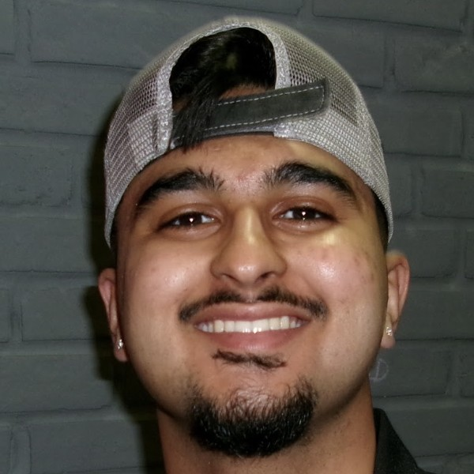
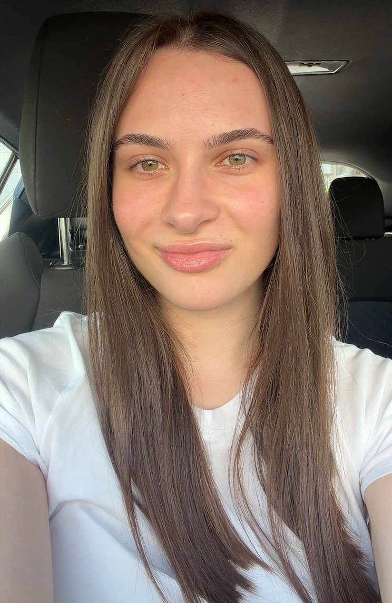
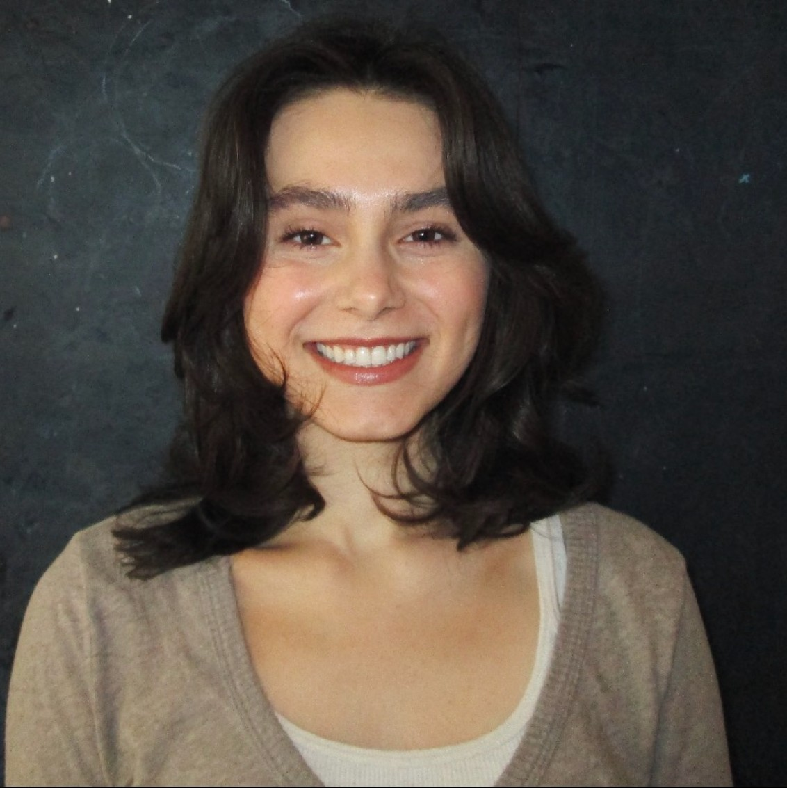
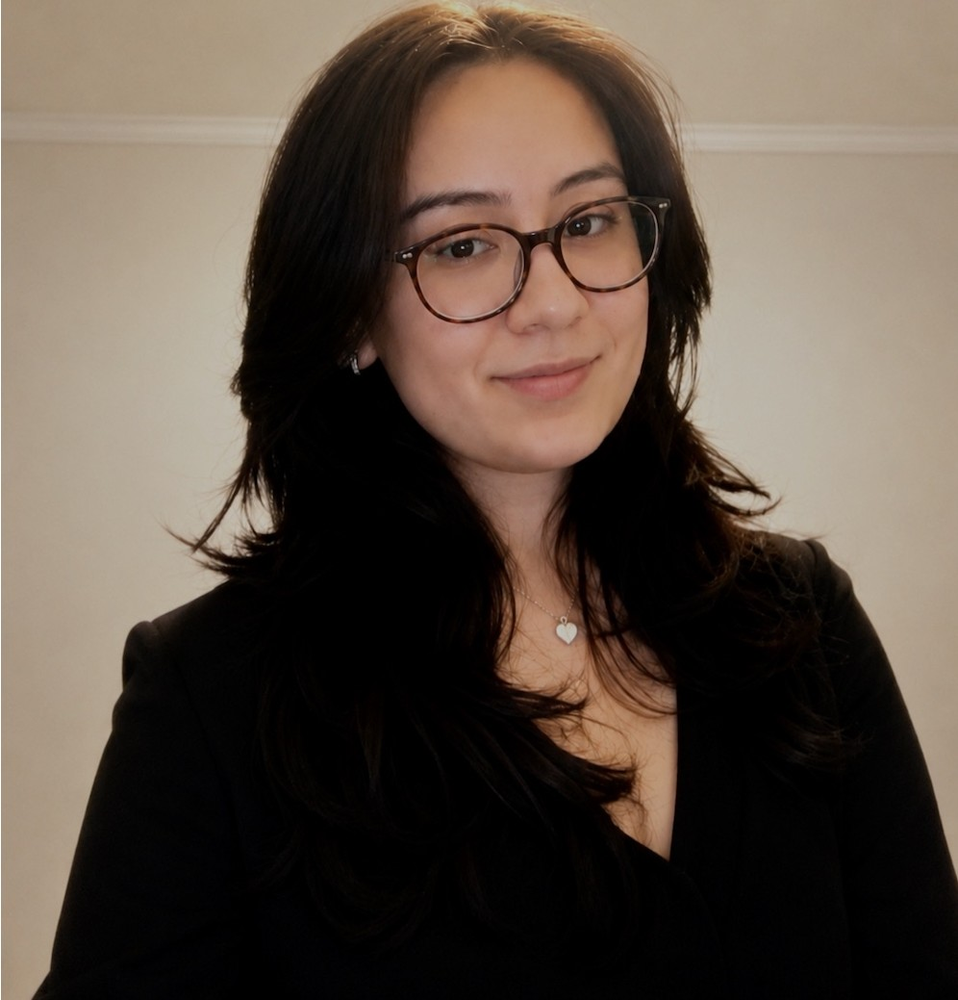
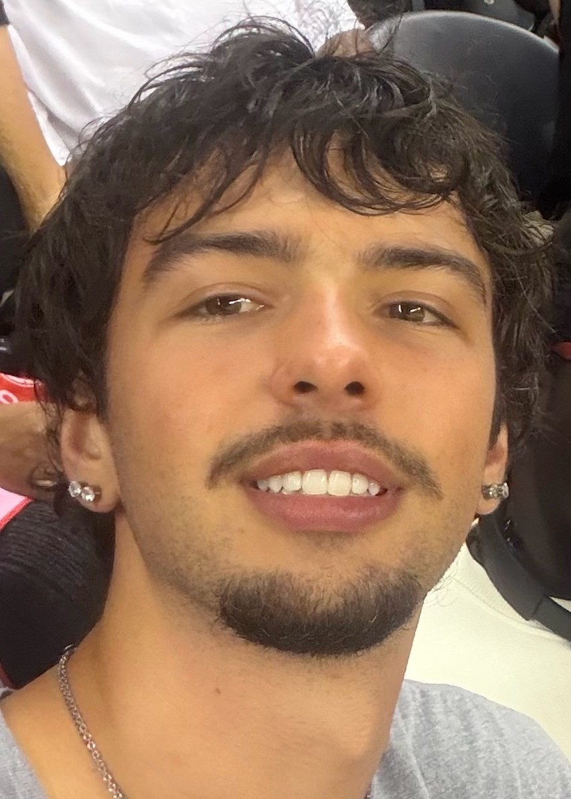
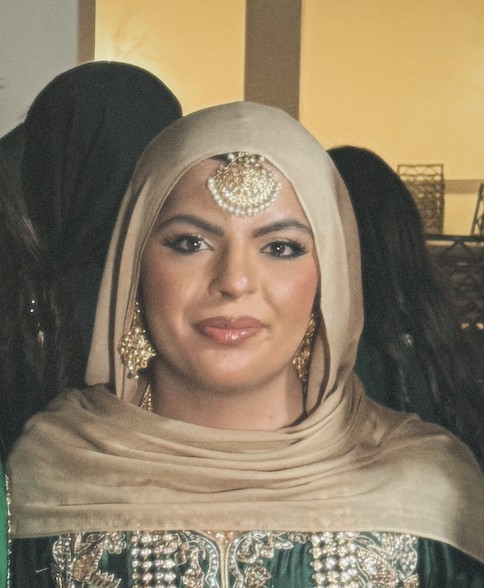

CO-PRESIDENT
Vraj Madhiwala
Senior · Chicago
Major: Molecular & Cellular Neuroscience; Psychology
Future goal: Pursue an MD/PhD
Favorite neurotransmitter: Dopamine
LUC email: vmadhiwala@luc.edu
02 / LEADERSHIP
Seven students, different paths, and one shared purpose: making the neuroscience experience at Loyola more connected and supportive.

Senior · Chicago
Major: Molecular & Cellular Neuroscience; Psychology
Future goal: Pursue an MD/PhD
Favorite neurotransmitter: Dopamine
LUC email: vmadhiwala@luc.edu

Junior · Schiller Park, IL
Major: Molecular & Cellular Neuroscience
Minor: Psychology
Future goal: Medical school
Favorite neurotransmitter: Serotonin
LUC email: jkovacheva@luc.edu

Junior · Columbus, OH
Major: Psychology
Minor: Neuroscience & Biostatistics
Future goal: A PhD in clinical psychology focused on mind-body interaction and PNI
Favorite neurotransmitter: Serotonin
LUC email: egunther@luc.edu

Senior · Rockton, IL
Major: Molecular & Cellular Neuroscience
Minor: Spanish
Future goal: Medical school with an interest in emergency medicine
Favorite neurotransmitter: Dopamine
LUC email: rfritsch@luc.edu

Junior · Chicago, IL
Major: Molecular & Cellular Neuroscience
Minor: Spanish and Literature; Bioethics
Future goal: An MD-PhD focused on neuro-oncology and neuroimmunology
Favorite neurotransmitter: Glutamate
LUC email: jcantoral@luc.edu

Junior · Naperville, IL
Major: Molecular & Cellular Neuroscience
Future goal: Dental school
Favorite neurotransmitter: Acetylcholine
LUC email: dbodalia@luc.edu

Junior · Buffalo Grove, IL
Major: Transfer student
Future goal: Become a physician
Favorite neurotransmitter: Glutamate
LUC email: mkhan80@luc.edu
Join as a mentor or mentee and help us keep building the community.
Get involved →